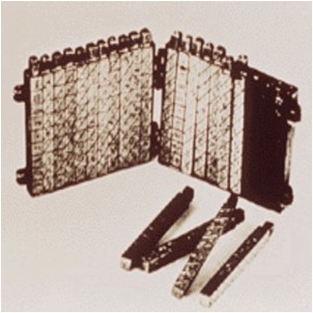
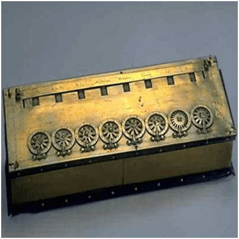

Présentation de l’informatique et de l’ordinateur
Définition et objet de l’informatique
L’informatique se dit en Anglais «Computer Science». Est-ce donc la «science des ordinateurs» ? Et bien non!
L’objet de l’informatique n’est pas de:
- réparer un ordinateur en panne;
- diagnostiquer un problème électronique;
- effectuer des branchements compliqués;
- fabriquer un ordinateur;
- expliquer le fonctionnement interne d’un ordinateur.
Un ordinateur comporte de nombreux programmes permettant de travailler. L’informatique est-elle plutôt la «science des logiciels» ? Et bien non, encore une fois!
L’objet de l’informatique n’est pas de:
- connaître tous les logiciels existants;
- savoir utiliser toutes les fonctions d’un logiciel particulier;
- tester des logiciels ni à chercher des bugs…
La racine du mot informatique est «information». L’informatique est-elle donc la «science du traitement de l’information» ? Oui, cette fois est la bonne!
- L’information désigne ici tout ce qui peut être traité par l’ordinateur (textes, nombres, images, sons, vidéos);
- L’outil utilisé pour traiter l’information de manière automatique s’appelle un ordinateur;
- Du fait de l’automatisation des processus de traitement, on peut dire que l’informatique est la science du traitement automatique de l’information.
L’ordinateur
Le mot ordinateur désigne une machine électronique programmable, dotée d’une partie matérielle (Hardware) et d’une partie logicielle (Software), destinée au traitement de l’information.
En français, ordinateur est un adjectif = “qui met de l’ordre”, “qui arrange”. L’Anglais, plus restrictif, utilise le terme de «computer » = calculateur, machine à calculer.
Historique de l’ordinateur
Prédecesseurs de l’ordinateur moderne
Le boulier

Le boulier a été inventé il y a environ 4 000 ans par les Chinois. C’est un support en bois sur lequel est fixé des tiges métalliques avec des perles. Les perles étaient déplacées par l’opérateur du boulier selon certaines règles pour effectuer des calculs arithmétiques.
Les os de Napier

Les os de Napier: Il s’agit d’un appareil de calcul manuel inventé par John Napier (1550-1617). Dans cet outil de calcul, il utilisait 9 bandes d’ivoire différentes ou os marqués de chiffres pour multiplier et diviser. C’est la première machine à utiliser la virgule décimale.
La Pascaline

La Pascaline est également connue sous le nom de machine arithmétique ou machine à additionner. Elle a été inventée entre 1642 et 1644 par le mathématicien-philosophe français Blaise Pascal. On pense qu’il s’agit de la première calculatrice mécanique et automatique.
Génération d’ordinateur
Une génération d’ordinateurs désigne les améliorations spécifiques apportées à la technologie informatique au fil du temps. En 1946, les circuits électroniques ont été développées pour effectuer le comptage. Ils ont remplacé les engrenages et autres pièces mécaniques utilisés pour le comptage dans les machines informatiques précédentes. À chaque nouvelle génération, les circuits sont devenus plus petits et plus avancés que ceux de la génération précédente. La miniaturisation a permis d’augmenter la vitesse, la mémoire et la puissance des ordinateurs. On compte en général cinq générations d’ordinateurs.
Ordinateurs de première génération
Les ordinateurs de la première génération (1946-1959) étaient lents, énormes et coûteux. Dans ces ordinateurs, les tubes à vide étaient utilisés comme composants de base de l’unité centrale et de la mémoire. Ces ordinateurs dépendaient principalement d’un système d’exploitation par lots et de cartes perforées. Les bandes magnétiques et les bandes de papier étaient utilisées comme périphériques de sortie et d’entrée dans cette génération.
On retrouve dans cette génération des ordinateurs tels que l’ENIAC (Intégrateur et calculateur numérique électronique) et l’EDVAC (calculateur automatique à variables discrètes).
Ordinateurs de seconde génération
La deuxième génération (1959-1965) a été l’ère des ordinateurs à transistors. Ces ordinateurs utilisaient des transistors bon marché, compacts et consommant moins d’énergie, ce qui rendait les ordinateurs à transistors plus rapides que les ordinateurs de la première génération. Dans cette génération, les noyaux magnétiques étaient utilisés comme mémoire primaire et les disques et bandes magnétiques comme mémoire secondaire. Le langage d’assemblage et les langages de programmation tels que COBOL et FORTRAN, ainsi que les systèmes d’exploitation de traitement par lots et de multiprogrammation étaient utilisés dans ces ordinateurs. Voici quelques ordinateurs appartenant à cette génération:
- IBM 1620;
- IBM 7094;
- CDC 1604.

Ordinateurs de troisième génération
La troisième génération d’ordinateurs utilisait des circuits intégrés (CI) au lieu de transistors. Un seul circuit intégré peut contenir un grand nombre de transistors, ce qui augmente la puissance d’un ordinateur et en réduit le coût. Les ordinateurs sont également devenus plus fiables, plus efficaces et plus petits. Les ordinateurs de cette génération utilisaient le traitement à distance, le partage du temps, la programmation multiple comme système d’exploitation.
Les langages de programmation de haut niveau tels que FORTRAN-II à IV, COBOL, PASCAL PL/1, ALGOL-68 ont également été utilisés dans cette génération. On avait par exemple:
- Série IBM-360;
- Série Honeywell-6000.
Ordinateurs de quatrième génération
Les ordinateurs de la quatrième génération (1971-1980) utilisaient des circuits intégrés à très grande échelle (VLSI), une puce contenant des millions de transistors et d’autres éléments de circuit. Ces puces ont rendu les ordinateurs de cette génération plus compacts, plus puissants, plus rapides et plus abordables. Les ordinateurs de cette génération utilisent des systèmes d’exploitation en temps réel, en temps partagé et distribués. Les langages de programmation tels que C, C++, DBASE ont également été utilisés dans cette génération.
Ordinateurs de cinquième génération
Dans les ordinateurs de cinquième génération (1980 à ce jour), la technologie VLSI a été remplacée par la technologie ULSI (Ultra Large Scale Integration). Elle a permis la production de puces à microprocesseur comportant dix millions de composants électroniques. Les ordinateurs de cette génération utilisent du matériel de traitement parallèle et des logiciels d’IA (Intelligence Artificielle). Les langages de programmation utilisés dans cette génération étaient C, C++, Java, .Net, etc.

Ces ordinateurs sont tous différents mais partagent une histoire commune.